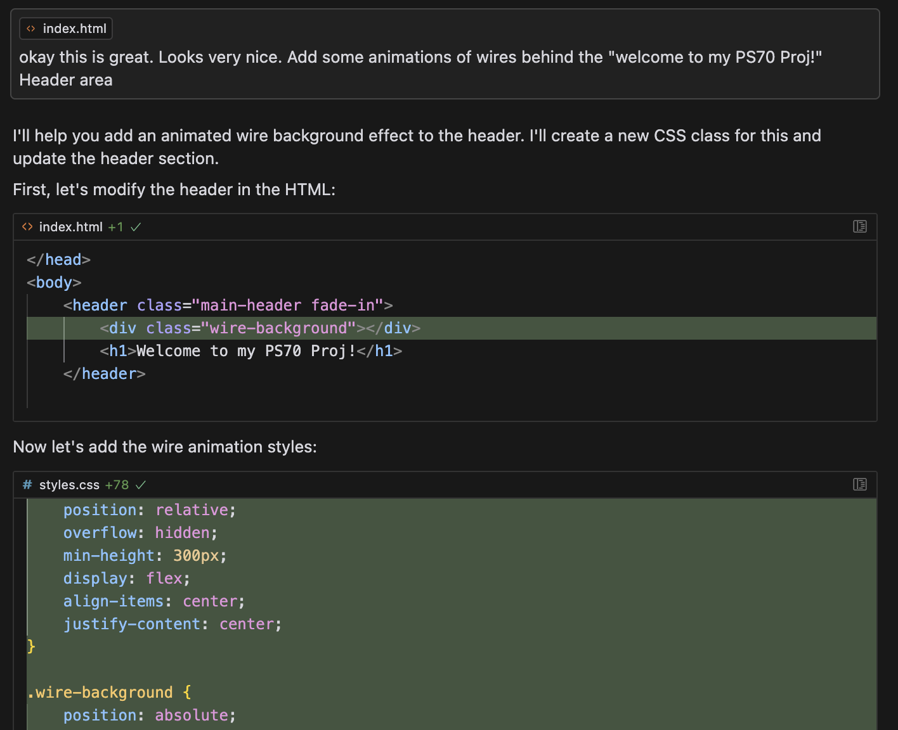

Website Creation
Bobby was extremely helpful in orienting us with GitHub and how to simulate our websites on it. We then used the template on the PS70 website to create a basic layout of our own website.
I was excited to start making the website, and was discussing some potential design ideas with those sitting around me - and one of my peers recommended a particular software that ended up becoming highly useful: Cursor AI
Although I have basic HTML and CSS knowledge, I was still a little unsure about how to tie it altogether to create a good design. Cursor came to my aid for this. I was able to ideate some of my thoughts and was able to get a good functioning website based by using some AI assistance to translate the more complex design ideas I had into actual code (eg. the glowing grid on the index.html page, the floating photo on the aboutme.html page, etc.)
Here's a screenshot of how I was able to use some of the prompts to create some cool features:
